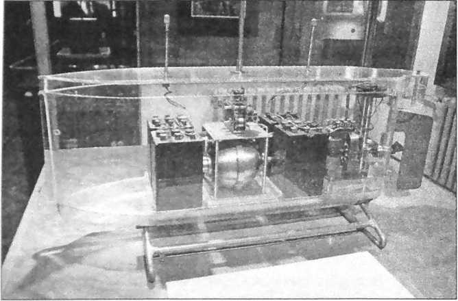

За весь период своей научной карьеры ученый получил несколько сотен патентов по всему миру, около ста из них - в США. Поскольку основной сферой его интересов была электротехника, труды и изобретения Николы Тесла в основном касались изучения электрического тока и различных приборов.
{kind=link}
Именно компания Теслы в 1893 году получила право заниматься освещением крупной ярмарки в Чикаго. До этого не было реализовано ни одного сравнимого по масштабу похожего проекта. Также достаточно широко известен проект Уорденклифф. Для его реализации Тесла обратился к банкиру за финансированием и получил огромную по тем временам сумму, а также участок земли на Лонг Айленде. Предполагалось, что ученый займется созданием нового типа связи, не требующего проводов и позволяющего передавать различную информацию на огромные расстояния. Была выстроена башня и проведена серия экспериментов, после которой инвестор прекратил финансирование в связи с тем, что ученый дезинформировал его об области своей работы - передача электричества с одного континента на другой банкира совершенно не интересовала. Дорогостоящий проект был закрыт, и это стало началом конца карьеры ученого. Помимо достаточно известных изобретений и работ, были и другие - неподтвержденные, непонятные и загадочные. Они были настолько непонятны современникам изобретателя, что поговаривали, будто бы ученый продал душу дьяволу. Документальных подтверждений не сохранилось, однако до сих пор в ходу слухи о причастности Теслы к Тунгусскому взрыву, изобретению электромобиля, берущего энергию буквально из ниоткуда, и другим, не менее загадочным приборам и опытам.
Катушка Тесла

Катушка Тесла была изобретена в 1891 году. Она состояла из первичной и вторичной катушек, у каждой из которых был собственный конденсатор для запаса энергии. Между катушками находился искровой промежуток, в котором генерировался разряд электричества, способного преобразовываться в дуги, проходить сквозь тело и создавать область заряженных электронов.
Тесла был одержим мечтой беспроводной городской электрификации, что и послужило толчком к изобретению этого механизма. В наши дни катушка Тесла чаще всего используется для развлечения и популяризации науки — её можно увидеть в экспозициях естественно-научных музеев по всему миру. Однако важность данного изобретения заключается в том, что был найден ключ к пониманию природы электричества и возможности его использования.
Усиливающий передатчик
Развивая идею передачи электроэнергии без применения проводов, Тесла решил, что лучше всего это делать на больших высотах. Именно поэтому, пользуясь финансовой помощью меценатов, он создал лабораторию в горах Колорадо-Спрингс в 1899 году. Там он построил свою самую большую и мощную катушку Тесла, которую назвал «усиливающим передатчиком». Он состоял из трёх катушек и составлял почти 16 метров в диаметре. Передатчик генерировал миллионы вольт электричества и создавал пучки молний длиной до 40 метров. На тот момент это была самая мощная молния, созданная искусственно.

Проблема заключалась в том, что Тесла был слишком амбициозен для своей эпохи: идея беспроводной передачи энергии начала воплощаться в жизнь лишь во втором десятилетии XXI века, да и то в качестве концептов и образцов. Несмотря на то, что проект всё ещё лежит за пределами повседневного использования, дальновидность изобретателя поражает. Тесла начал работу над проектом в 1901 году, но после того, как финансирование прекратилось, он свернул свои изыскания, а в 1915 году участок был выставлен на торги.
Турбина Николы Тесла

В начале XX века, на заре эры поршневых двигателей внутреннего сгорания, Тесла создал свою турбину, которая могла конкурировать с двигателем внутреннего сгорания (ДСВ). В турбине отсутствовали лопасти, а топливо сгорало вне камеры, вращая гладкие диски. Именно их вращение и давало работу двигателю.
В 1900 году, когда Тесла протестировал свой двигатель, эффективность потребления топлива составила 60% (к слову, с нынешними технологиями этот показатель не превышает 42% преобразования топлива в энергию). Несмотря на безусловный успех изобретения, оно не прижилось: бизнес был ориентирован именно на поршневые ДСВ, которые и сейчас, спустя более 100 лет, остаются основной движущей силой автомобилей.
Теневая фотография

Уже в пожилом возрасте Теслу сбила легковая машина, в результате он получил перелом ребер. Всё это привело к острому воспалению легких, перешедшему в хроническую форму. Тесла оказался прикованным к постели.
Никола Тесла умер от сердечной недостаточности в ночь на 7 января 1943 года в возрасте 86 лет. Тесла и в последние дни жизни требовал, чтобы ему никто не мешал, на дверях его гостиничного номера, где он жил последние годы, в Нью-Йорке висела специальная табличка. Тело Теслы было обнаружено горничной и директором гостиницы «Нью-Йоркер» только через 2 дня после его смерти. 12 января тело кремировали, урну с прахом установили на Фэрнклиффском кладбище в Нью-Йорке. Позже она была перенесена в Музей Николы Теслы в Белграде.
Радио
{kind=link}
Личность изобретателя радио по сей день является предметом ожесточённых споров. В 1895 году Тесла был готов передать радиосигнал на расстояние 50 км, но, как мы уже знаем, его лаборатория сгорела, что затормозило исследования в данной области. В то же время в Англии итальянец Гульельмо Маркони разработал и запатентовал технологию беспроволочной телеграфии в 1896 году. В системе Маркони использовались два контура, что снизило покрывающую площадь радиопередачи, а наработки Тесла могли значительно увеличить выходную мощность сигнала.
Никола Тесла представил своё изобретение перед Патентным бюро США в 1897 году и получил патент в 1900 году. В это же время Маркони попытался получить патент в США, но его изобретение было отвергнуто, так как оно слишком сильно походило на уже запатентованную технологию, принадлежащую Тесле. Испугавшись, Маркони открыл собственную компанию, находящуюся под серьёзной защитой Эндрю Карнеги и Томаса Эдисона. В 1901 году, используя ряд патентов, принадлежащих Тесле, Маркони смог передавать радиоволны через Атлантику. В 1904 году, не имея внятного обоснования, Патентное бюро отменило своё решение и признало патент Маркони действительным, что и сделало его формальным изобретателем радио. В 1911 году итальянец получил Нобелевскую премию, а спустя 4 года, в 1915, Тесла подал в суд на компанию, принадлежащую Маркони, за незаконное использование чужой интеллектуальной собственности. К сожалению, на тот момент Никола Тесла был слишком беден, чтобы судиться с крупной корпорацией. Судебные тяжбы прекратились лишь в 1943 году, через несколько месяцев после смерти изобретателя. Тогда комиссия постановила законность его требований и оставила в силе патент Теслы.
Неоновые лампы

Несмотря на то, что флуоресцентный или неоновый свет не был открыт Николой Теслой, он внёс весомый вклад в улучшение технологии их получения: никто до сих пор не придумал альтернативы его катодному излучению, получаемому с помощью электродов, помещённых в вакуумные трубки.
Тесла увидел потенциал экспериментов с газовой средой, через которую проходили электрические частицы, а также разработал четыре различных типа освещения. Например, он конвертировал так называемый чёрный цвет в видимый спектр с помощью фосфоресцирующих веществ, созданных им же. Кроме того, Тесла нашёл практическое применение таким технологиям, как неоновые лампы и рекламные вывески.
Трансформаторная подстанция гидроэлектростанции Адамса
Комиссия по Ниагарскому водопаду находилась в поиске компании, которая в силах построить ГЭС, способную обуздать мощь водных ресурсов на долгие годы. Сначала фоворитом была фирма Томаса Эдисона, однако после того, как Тесла продемонстрировал эффективность переменного тока перед представителями компании «Уэстингхаус Электрик», выбор пал на него в 1983 году. Инженеры «Уэстингхаус» использовали наработки Николы Тесла, но большим препятствием было получение финансирования столь инновационного проекта, в жизнеспособности которого сомневались многие.
Тем не менее, 16 ноября 1896 года в машинном зале ГЭС Адамса был торжественно повернут рубильник, а станция начала обеспечивать электричеством город Буффало в штате Нью-Йорк. Позже были построены ещё десять генераторов, работающих для электрификации Нью-Йорка. Для того времени проект был поистине революционным и поставил планку для всех современных электростанций.
Асинхронный двигатель

Асинхронный двигатель состоит из двух частей — статора и ротора и в работе используется переменный ток. Статор остаётся неподвижным, с помощью магнитов вращая ротор, находящийся в середине конструкции. Такой тип двигателя отличается долговечностью, простотой в использовании и сравнительно низкой стоимостью.
В 80-х годах XIX века над созданием асинхронного двигателя трудились два изобретателя: Никола Тесла и Галилео Феррари. Оба они представили свои наработки в 1888 году, однако Феррари опередил своего соперника на два месяца. При этом их исследования были независимы, а результаты идентичны, к тому же оба изобретателя использовали патенты Теслы. Асинхронный двигатель стал невероятно популярным и используется до сих пор в пылесосах, фенах и электроинструментах.
Телеавтомат
{kind=link}
В 1898 году, на выставке электротехники в Мэдисон-Сквер-Гарден, Тесла продемонстрировал своё изобретение, которое он назвал «телеавтоматом». По сути, это была первая в мире радиоуправляемая модель судна. У изобретения не было патента, так как представители Патентного бюро не желали признавать существование того, что (по их мнению) не могло существовать. Никола Тесла показал несостоятельность их сомнений, продемонстрировав своё изобретение на выставке. Он дистанционно управлял рулевым винтом модели и освещением корпуса с помощью радиоволн.
Это изобретение стало первой ступенью в трёх совершенно разных сферах. Во-первых, Тесла разработал пульт дистанционного управления, который сейчас применяется в быту — от домашних телевизоров до гаражных ворот. Во-вторых, модель была первым роботом, который двигался без прямого воздействия человека. И наконец, в-третьих, сочетание робототехники и дистанционного управления позволяют назвать катер Николы Тесла прадедушкой современных дронов.
Изобретение переменного тока

Не подлежит сомнению тот факт, что наиболее важные изобретения Николы Теслы связаны с переменным током. Хоть изобретатель и не является пионером в этой области, его изыскания позволили провести электрификацию на мировом уровне.
Говоря о том, как переменный ток завоевал мир, нельзя не упомянуть имя Томаса Эдисона. На заре своей деятельности, Тесла трудился в компании своего будущего соперника. Именно фирма Эдисона первой стала работать с постоянным током. Переменный ток схож по характеристикам с батареями, так как посылает энергию на носители вне контура. Проблема в том, что сила тока постепенно ослабевает, а это делает невозможным перемещение электричества на большие расстояния. Эту задачу решил Тесла, работая с переменным током, который позволяет перемещать электричество от источника и обратно, а также покрывать огромные расстояния между объектами.
Томас Эдисон осуждал Николу Теслу за его исследования в области переменного тока, считая их бессмысленными и бесперспективными. Именно эта критика послужила поводом для того, чтобы пути двух изобретателей разошлись навсегда. Пока Тесла был безработным и перебивался на случайных заработках, он не мог собрать средства для создания собственной компании. Прошлые успехи привлекли к его работам внимание Джорджа Уэстингхауса, инженера и бизнесмена. Он выкупил все патенты Николы Теслы, связанные с переменным током.
Поворотным моментом в истории электричества можно назвать тендер на установку освещения Всемирной выставки в Чикаго в 1983 году, в котором участвовали фирмы Эдисона и Уэстингхауса. Первый предложил электрифицировать экспозицию за 554 тысячи долларов, а второй обещал сделать это за 399 тысяч долларов, что и дало ему победу и контракт, а затем и успешное воплощение обещанного в жизнь, тем самым обеспечив переменному току светлое будущее. И снова благодаря великому гению Николы Теслы.